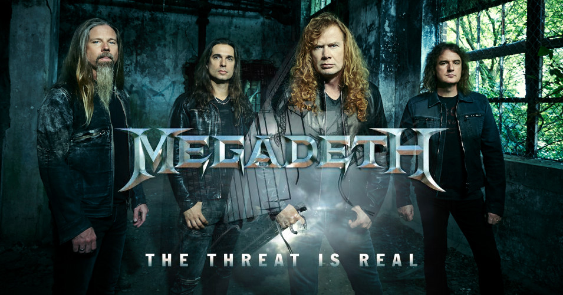
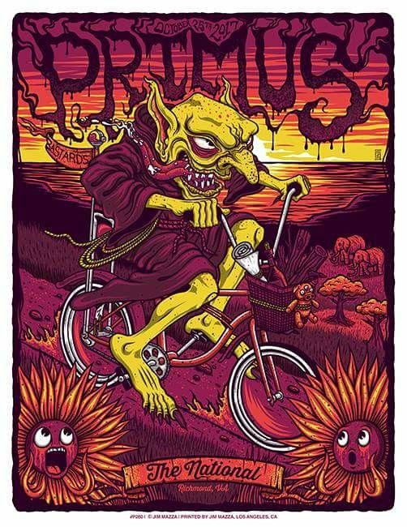

Metallica - моя любимая группа

Группа получила сторонников в среде поклонников андеграундной музыки и одобрительные отзывы критиков, выпустив третий студийный альбом Master of Puppets (1986), который сейчас считается «классикой трэш-метала» и который существенно повлиял на дальнейшее развитие этого жанра.Узнай больше
Официальный сайт группы
Группа в Инстраграме
Слушай Master Of Puppets
Наверх
Слушай Megadeath!
Группа является одним из самых коммерчески успешных трэш-метал-коллективов, продав более 50 млн альбомов по всему миру[4], включая номинированный на «Грэмми» мульти-платиновый альбом Countdown to Extinction. В одних только Соединённых Штатах Megadeth получили семь платиновых, пять золотых альбомов и двенадцать номинаций на премию «Грэмми», как лучший исполнитель музыки в жанре хеви-метал.Узнай больше
Официальный сайт группы
Группа в Инстраграме
Слушай Rust in Peace
Наверх
Primus в каждый дом
Музыкальный стиль Primus сложно определить. Обычно критики описывают его как фанк-метал или альтернативный метал, а сами музыканты называли всевозможные термины, например трэш-фанк. Лес Клейпул однажды назвал их музыку «психоделическая полька». Primus — единственная группа, для которой в ID3-теге существует личный стиль.Узнай больше
Официальный сайт группы
Группа в Инстраграме
Слушай Sailing the See of Cheese
Наверх